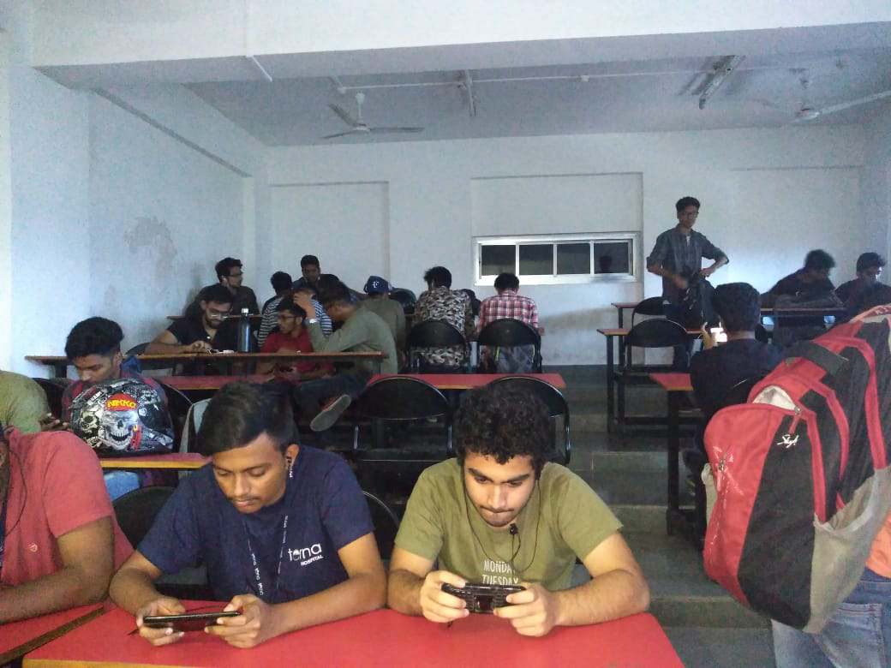

WORKSHOPS UNDER CSI 1. GITHUB GitHub is a web-based hosting service for version control using Git. It is mostly used for computer code. It offers all of the distributed version control and source code management (SCM) functionality of Git as well as adding its own features. It provides access control and several collaboration features such as bug tracking, feature requests, task management, and wikis for every project. GitHub offers plans for enterprise, team, pro and free accounts which are commonly used to host open-source software projects.As of January 2019, GitHub offers unlimited private repositories to all plans, including free accounts. As of June 2018, GitHub reports having over 28 million users and 57 million repositories[8] (including 28 million public repositories, making it the largest host of source code in the world. SPEAKER: Mr. Zainul Abbasi (IIT Alumni) The workshop was about how to work on github. The participants were able to understand the working of GitHub. 2. IoT INTER COLLEGE COMPETITION The internet of things, or IoT, is a system of interrelated computing devices, mechanical and digital machines, objects, animals or people that are provided with unique identifiers ( UIDs ) and the ability to transfer data over a network without requiring human-to-human or human-to-computer interaction. The participants performed various project based on IoT. Evaluators: Mr. Pravin Saini-Technology Head, Embieelectrotech Mr.Millindar Segar-VP,Astute Learnings Mr Navaneethakrishnan -CTO,Gauranga Technologies 3. R PROGRAMMING R is a programming language and free software environment for statistical computing and graphics supported by the R Foundation for Statistical Computing. The R language is widely used among statisticians and data miners for developing statistical software and data analysis. The participants went their bags filled the basic knowledge and data types used in R programming. They also learned about the applications of R programming in DATA science. SPEAKER: Divesh R. Kubal, COE-ML, eClerx Services Tejas S. Chougule, Analytics, Satori Group 4. MACHINE LEARNING Machine learning (ML) is the scientific study of algorithms and statistical models that computer systems use to effectively perform a specific task without using explicit instructions, relying on patterns and inference instead. It is seen as a subset of artificial intelligence. Machine learning algorithms build a mathematical model of sample data, known as "training data", in order to make predictions or decisions without being explicitly programmed to perform the task. Machine learning algorithms are used in a wide variety of applications, such as email filtering, and computer vision, where it is infeasible to develop an algorithm of specific instructions for performing the task. We conducted a 2 day ML workshop where the students learned various algorithms such as ● Linear Regression ● Logistic Regression ● Decision Tree SPEAKER : Prof. Yogesh Jadhav 5. AMAZON WEB SERVICES Amazon Web Services (AWS) is a subsidiary of Amazon that provides on-demand cloud computing platforms to individuals, companies and governments, on a metered pay-as-you-go basis. In aggregate, these cloud computing web services provide a set of primitive, abstract technical infrastructure and distributed computing building blocks and tools. One of these services is Amazon Elastic Compute Cloud, which allows users to have at their disposal a virtual cluster of computers, available all the time, through the Internet. AWS's version of virtual computers emulate most of the attributes of a real computer including hardware (CPU(s) & GPU(s) for processing, local/RAM memory, hard-disk/SSD storage); a choice of operating systems; networking; and pre-loaded application software such as web servers, databases, CRM, etc. The participants were provided with hands on AWS experience. SPEAKER: Prof. Bhushan Jadhav 6. CODEWARS The participants were given 6 problems to solve without any programming language barrier. Each one of them experienced the feel of a hackathon and they discovered their coding side. There were more than 20 teams participating the competition. 7. GAMING EVENT : PUBG With all the technical workshops and competition all over the year, it was time for some razzmatazz and what better way than PUBG! There were more than 100 participants from different colleges who had immense fun during the gaming event.  COMITTEE MEMBERS ● SAURABH SINGH : CHAIRMAN ● POOJA DEVRUKHKAR : VICECHAIRMAN ● AKHILESH SAKURE : SECRETARY ● RUSHIKESH CHAUDHARI : TREASURER ● KETKI MITHBAWKAR : EXECUTIVE MEMBER ● VIKAS RAJBHAR: EXECUTIVE MEMBER ● PRIYANKA SANAP: EXECUTIVE MEMBER ● SAMEER MAHAJAN : EXECUTIVE MEMBER ● TUSHAR PATIL : EXECUTIVE MEMBER ● SAJAL PATIL : EXECUTIVE MEMBER ● VIJAYLAXMI HUBLI : EXECUTIVE MEMBER ● ASHUTOSH TIWARI : EXECUTIVE MEMBER